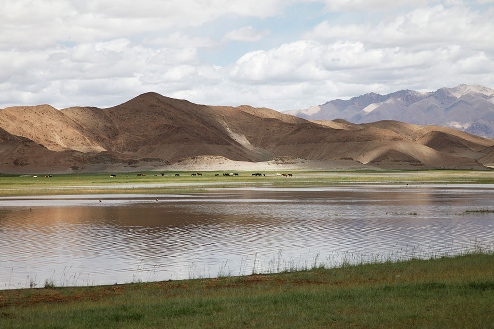
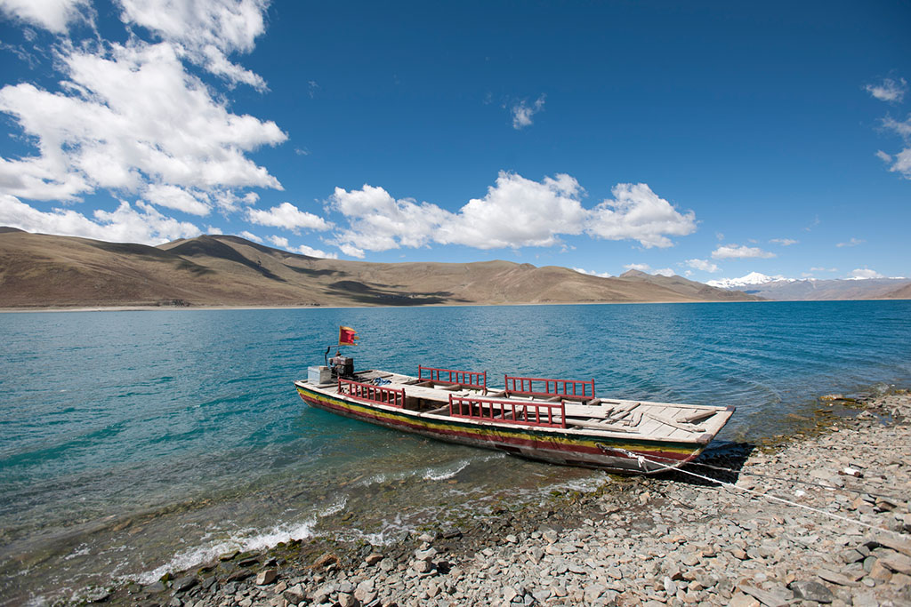
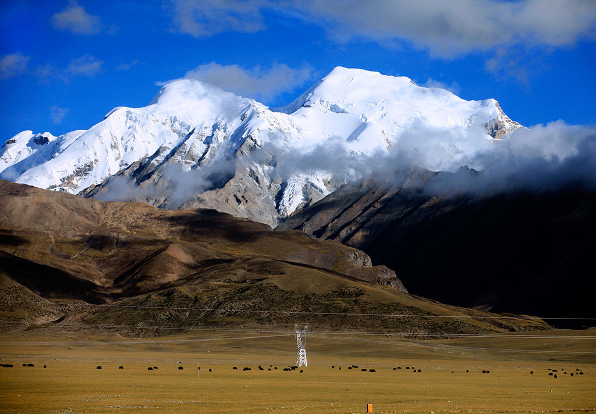
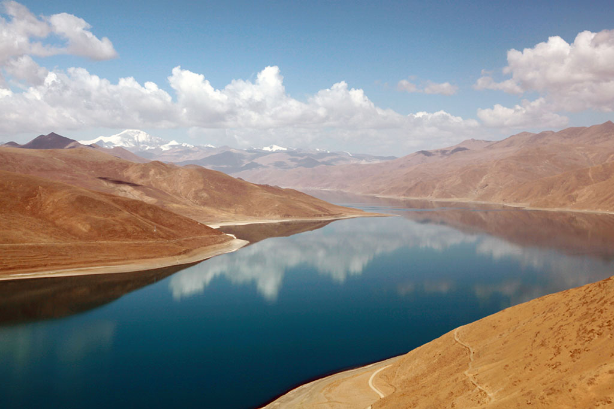

|  |  |  |  |
| 风吹草低现牛羊 | 2006-10-2 |
| 美丽的草原我的家，风吹绿草遍地花；彩蝶纷飞百鸟儿唱，一弯碧水映晚霞；骏马好似彩云朵，牛羊好似珍珠撒…… | |
| 绝美江河之源 | 2009-3-21 |
| 各拉丹东雪峰和姜根迪如冰川均为巨大的冰雪山体，是流之不尽，淌之不竭的天然固体水库，有“江河之母”之称。 | |
| 雪山 | 2011-1-14 |
| 虽终年有云雾缭绕，但在阳光的映照下，光芒万丈，更令人肃然起敬和向往――随着岁月的流逝，越来越多的人们都清楚，雪山不再是寒冷的冰霜雪地 | |
| 碧水蓝天黄土地 | 2013-10-15 |
| 黄土塬又称黄土平台，它是中国西北部黄土高原地区因冲刷形成的高地，四边陡，顶上平，这种地形是山又不是山 | |